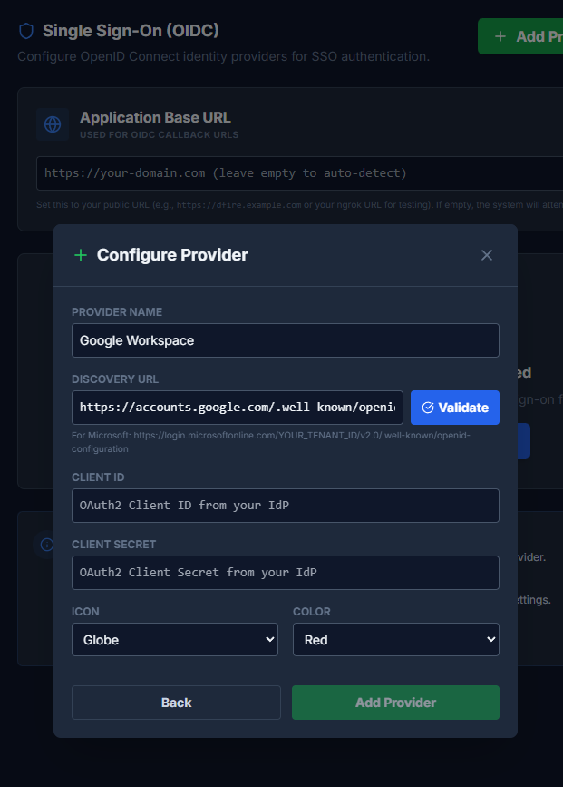

Single Sign-On (SSO)
Configure OIDC-based Single Sign-On to allow users to authenticate with your organization's identity provider.
Overview
DFIRe supports OpenID Connect (OIDC) for Single Sign-On. The following providers have been tested:
- Google Workspace
- Microsoft Entra ID (formerly Azure AD)
- Auth0
Any OIDC-compliant identity provider should work, though compatibility cannot be guaranteed for untested providers.
How It Works
- User clicks the SSO provider button on the login page
- User is redirected to the identity provider
- After authentication, user is redirected back to DFIRe
- DFIRe creates or updates the user account based on OIDC claims
- User is logged in with appropriate permissions
Adding an SSO Provider
-
Navigate to Settings > Single Sign-On
You need administrator permissions to configure SSO.
-
Set the Application Base URL
Enter your DFIRe instance's public URL (e.g.,
https://dfire.example.com). This is used for generating callback URLs. Leave empty to auto-detect from request headers. -
Click "Add Provider"
Choose a provider template (Google Workspace, Microsoft Entra ID) or select "Custom OIDC Provider" for other identity providers.
-
Configure the Provider
- Provider Name: Display name shown on the login button
- Discovery URL: The OIDC discovery endpoint (
.well-known/openid-configuration) - Client ID: From your identity provider's app registration
- Client Secret: From your identity provider's app registration
- Icon and Color: Customize the appearance of the login button
-
Validate the Discovery URL
Click "Validate" to verify the discovery URL is accessible and returns valid OIDC metadata.
- Click "Add Provider" to Add Configuration
-
Select a Default Role and Save
After adding the provider, select a default role for new SSO users and click "Save Configuration".
Important: Adding a provider does NOT automatically save the configuration. You must select a default role and click "Save Configuration" to persist your changes. The default role determines what permissions new SSO users receive on first login.
Provider Setup Examples
Google Workspace
- Go to Google Cloud Console
- Create or select a project
- Go to "APIs & Services" > "Credentials"
- Click "Create Credentials" > "OAuth client ID"
- Select "Web application"
- Add the authorized redirect URI shown in DFIRe's provider configuration
- Note the Client ID and Client Secret
- In DFIRe, use:
- Discovery URL:
https://accounts.google.com/.well-known/openid-configuration
- Discovery URL:
Google Workspace: To restrict access to your organization's domain, configure user assignment in Google Cloud Console or use Google Workspace's app access controls.
Microsoft Entra ID
- Go to Azure Portal > Microsoft Entra ID > App registrations
- Click "New registration"
- Enter a name (e.g., "DFIRe")
- Set "Supported account types" based on your needs
- Add the redirect URI shown in DFIRe's provider configuration
- After creation, note the Application (client) ID
- Go to "Certificates & secrets" and create a new client secret
- In DFIRe, use:
- Client ID: The Application (client) ID
- Client Secret: The secret value you created
- Discovery URL:
https://login.microsoftonline.com/{tenant-id}/v2.0/.well-known/openid-configuration
Auth0
- Go to Auth0 Dashboard > Applications > Applications
- Click "Create Application"
- Select "Regular Web Applications"
- In Settings, add the redirect URI shown in DFIRe's provider configuration to "Allowed Callback URLs"
- Note the Client ID and Client Secret
- In DFIRe, use:
- Discovery URL:
https://your-tenant.auth0.com/.well-known/openid-configuration
- Discovery URL:
Redirect URI Configuration
Each SSO provider in DFIRe displays the exact redirect URI that must be configured in your identity provider. The format is:
https://your-dfire-domain.com/oidc/callback/{provider-id}/Copy the redirect URI shown in DFIRe's provider card and add it to your identity provider's authorized redirect URIs.
Note: The redirect URI must match exactly, including the trailing slash. Mismatched URIs are a common cause of SSO authentication failures.
User Provisioning
When a user authenticates via SSO for the first time, DFIRe automatically creates an account using information from the OIDC claims:
| DFIRe Field | OIDC Claim |
|---|---|
| Username | preferred_username or email |
email |
|
| First Name | given_name |
| Last Name | family_name |
Default Role
New users created via SSO are assigned the default role configured for that provider. Administrators can later adjust user roles as needed.
Note: If no default role is selected, SSO users will be created without any role assignment and will have limited access until an administrator assigns them a role.
Security Considerations
HTTPS Required
SSO requires HTTPS in production. The redirect URI must use https://.
Client Secret Storage
Client secrets are stored encrypted in the database using the CREDENTIAL_ENCRYPTION_KEY. Keep this key secure and backed up.
Access Control
DFIRe does not control which users can authenticate via SSO. Configure access control (who can sign in) in your identity provider:
- Google: Use app access settings in Google Workspace admin
- Microsoft: Configure user assignment in the Enterprise Application settings
- Auth0: Use Auth0 rules or application settings
Session Management
SSO users get the same session management as local users:
- Sessions can be revoked by administrators
- All sessions are logged with IP and user agent
- Session timeout is configurable
Troubleshooting
Common Issues
Redirect URI Mismatch
Error: "The redirect URI in the request does not match"
Solution: Ensure the redirect URI in your identity provider exactly matches the one shown in DFIRe's provider configuration, including the trailing slash.
Invalid Client Secret
Error: "Client authentication failed"
Solution: Regenerate the client secret in your identity provider and update it in DFIRe. Remember to click "Save Configuration" after updating.
User Not Assigned to Application
Error: "User is not assigned to this application" (common with Microsoft Entra ID)
Solution: In Microsoft Entra ID, go to the app's "Users and groups" and assign users or groups, or disable user assignment requirement in app properties.
Missing Email Claim
Error: "Email claim not found"
Solution: Ensure your identity provider is configured to include the email scope and claim. The email claim is required for user provisioning.
Discovery URL Validation Fails
Solution: Verify the discovery URL is accessible from your DFIRe server. For Microsoft, ensure you've replaced {tenant-id} with your actual tenant ID.